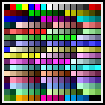
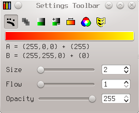
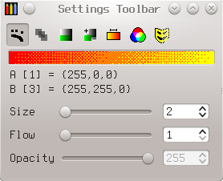
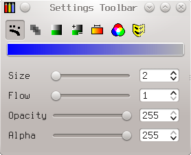
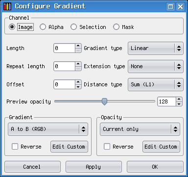
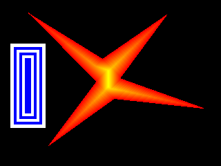
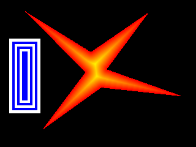
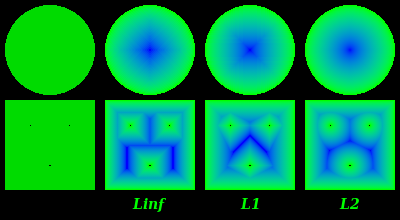
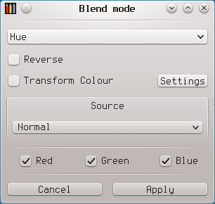

Pixel Art is the main task that mtPaint is designed for. This art form is essentially very simple and similar to painting in the real world. For example you have a canvas to paint on, a brush to paint with, and a palette of colours for the brush to use.
Here is what the mtPaint main window looks like:
The toolbars at the top and the palette on the left can be toggled on and off with the keys F5-F8 to best suit the job you are doing.
The first decision you need to make before starting a project is what type of canvas do you want to work with. mtPaint supports two types of canvas:
Indexed Palette images use a palette of between 2 and 256 colours. Each of these colours can be set by the user and is saved along with the canvas to the image file. RGB images do not save the palette, but they have the benefit of being able to use many millions of colours in the image. For any type of work related to digital photographs you will need to use an RGB canvas.
When starting mtPaint you automatically have an empty canvas with the same geometry as your previous work. If you want something else you must use the new image window which is called up by pressing Ctrl-N, using the File menu or by pressing the new image icon. It allows you to:
If you check the 'Undoable' option when creating new image, it becomes possible to undo it just like any other editing operation. This is especially useful when grabbing screenshots - you can grab several, and then save all of them at once using 'Export undo images' from the File menu.
mtPaint has several different painting tools which you can use. To start using these tools you select the relevant icon on the Tools section of the toolbar at the top of the mtPaint window.
If at any time you make a mistake, you can always use the undo and redo functions via the Ctrl-Z and Ctrl-R keys, the Edit menu or the main toolbar. By default, you can undo up to 100 actions - less if undo space is not large enough. Preferences window allows you to allocate more memory to the undo space, or increase the undo limit up to 1000 actions.
Generally, you need undo space of at least twice the uncompressed size of the largest image you want to process - i.e., (width x height x 6) for RGB images, or (width x height x 2) for indexed.
The Paint tool is the simplest painting tool. The easiest way to use it is to select one of the pre-defined brush settings by pressing F3 or by clicking on the brush preview area above the palette. This will then give you a selection of brush shapes to choose from:

If you want to manually adjust the brush size, or flow of the spray, you can do this by using the settings toolbar. Alternately, you can assign keyboard shortcuts to "Larger brush" and "Smaller brush", and use them.
Brushes are centered on the cursor coordinates if odd-sized; even-sized brushes, being impossible to exactly center, are biased to the upper left (i.e. the cursor is on the pixel to the lower right of the geometric centre).
The shuffle tool swaps random pixels in the brush area. It is useful for mixing between two blocks of colour on the canvas and creating a pixellated texture like this:

The tool size and flow affect how the shuffle operates on the canvas.
The flood fill works by filling an area where all of the pixels are the same colour. If you right click on the flood fill icon you can have more control over the flood fill actions.
By setting 'By image channel' you can fill an area on a utility channel by using the image channel as the reference for the fill area.
A 'fuzzy' mode can be used by setting the number to greater than 0. This mode allows you to fill an area of pixels that are similar to the one you first click, rather than relying on pixels being identical, which is useful for photographs.
The 'RGB Cube' toggle makes the fuzzy mode use the RGB cube model as opposed to the default L*X*N* sphere, which can be useful for certain situations (see 3.5.4 for more details of the difference between the cube and sphere methods). The 'Gradient-driven' toggle makes the fuzzy mode consider the difference between adjacent pixels, rather than the original starting pixel and each candidate pixel.
To draw a straight line in mtPaint you simply:
The line procedure will then continue until you press the right mouse button or press the Escape key to stop. The thickness of this line is set by the tool size.
The straight line tool can also draw an arrow head at the end of the current line if you press either the 'A' or 'S' keys for an open or closed head. The size of the head is determined by the tool flow. If you set the flow value too low, the arrowhead will be drawn too small to be visible at all.
The smudge tool is only available when you are editing an RGB image. It works by smudging an area of pixels set by the tool size. By dragging the mouse in different directions you will achieve a different smudge effect. Here is an example of smudging:

This effect is achieved with Continuous mode switched on and Opacity mode switched off.
The clone tool is used to copy chunks from one part of the image to the other. After selecting the clone tool you must set the tool size and then move the mouse cursor over the canvas area. Then you hold the Ctrl key down and move the mouse in order to position the tool perimeter (black and white) away from the clone perimeter (black and red). After releasing Ctrl you can then press the left mouse button to copy pixels from the red and black box to the white and black box. Here is an example:

If you right click on the tool icon you can have more control over the tool. You can set the source offset to precise values with the corresponding spins. Or you can toggle off the "Aligned" mode, making the clone source stay in one place instead of following the cursor; the second pair of spins allows you to set the coordinates (the centre point) for the source.
Ctrl+left click will move the source (clone perimeter) to the location where the mouse cursor is.
If you wish to paste some text onto the canvas you need to press the 'T' key or click the text tool icon on the toolbar. You will then be presented with a form, where you need to type in the text you want to paste onto the canvas. You will be able to change the font type and its size.
If you are using GTK+2 or GTK+3, you also have a number of extra options. You can enter multi-line text (press Ctrl+Enter to insert a newline character) and choose alignment for it: left/center/right. You can set target DPI different from one of your display. When editing an RGB image you also have the option of having antialiased text for smoother edges. With GTK+2.6 or later, you have the luxury of rotating the text to any angle, and setting letter spacing.
Once you are happy with the text in the preview area you will then be able to drag the text around and position it where you want. You can then change the colour of the text by clicking on a palette colour or you may want to change the pattern. You can rotate the text by 90 degree steps at any time with with the rotate selection icons on the toolbar, or by using the Selection menu. You commit the text to the canvas just like you would for a normal paste operation, so you right click or press the Enter key.
As well as using the standard GTK+ text rendering facilities, mtPaint can also use the FreeType text rendering library directly in order to gain the following advantages:

Despite these advantages, the standard GTK+ text rendering is still retained in mtPaint as it has these advantages:
The first step when using the FreeType text tool is to populate the 'Font Directory' tab. When the dialog is started for the first time, mtPaint will attempt to find all the fonts on your system automatically. If this fails then you will need to manually enter each directory which contains the fonts that you want to use. Once you are happy with your directories you must press the 'Create Index' button which will create the font index.
At this point you should be able to return to the 'Text' tab and select the font you wish to use.
The palette is positioned on the left hand side of the mtPaint window and is used to select colours for painting. If you left click on a colour it is chosen for colour A and a right click will choose colour B. Colour A and B are previewed in a small area above the palette. A and B can be swapped by pressing the 'X' key.
The palette colour chosen as colour A has a highlight on its left; the one chosen as colour B, on its right. If one colour is chosen as both A and B, it naturally has both highlights.
Also you can see palette indices and RGB values of colours A and B on the Settings toolbar (see 3.5, the "Indexed image" example). The palette index and RGB values for the colour under cursor are displayed on the status bar as the 'Pixel [ I ] {RGB}' item.
You can edit colours A and B by pressing Ctrl-E, or by clicking on the colours A/B preview.
In case the image is indexed, and colours A and B are the same, you need to edit colour B to get the palette entry to change.
You can edit the whole palette by pressing Ctrl-W, or by clicking on colour index in the palette window - in this case palette editor starts with the clicked colour selected.

When editing the whole palette, you can create colour scales between two selected colours; set the "From" and "To" spins to the endpoints of the scale, select the interpolation mode, and press the "Create" button. Pressing the "From" and "To" buttons sets the corresponding spin to the current colour index.
Scales can be built by interpolating between the endpoints' colours in RGB, sRGB (linear RGB, see 6.8.2), HSV, or by using the currently selected gradient; in the latter case, the endpoints get modified too. If you want a reverse HSV or gradient scale, set the endpoints in a reverse order (the "To" index smaller than the "From" index).
If "Preview" button is toggled on, the changes you make will immediately be visible in the palette window, and on the canvas if the image is indexed.
You can save and load the current palette by accessing the relevant function in the Palette menu. mtPaint supports GPL (GIMP palette) and TXT (simple text) palette file formats, and can also read palette from indexed image files in any supported image format.
If you want a palette file to be used as the default mtPaint palette you can set this in the Path section of the Preferences window.
It is possible to sort the whole palette by using the Palette menu option. You can move a single palette entry from one index to another by doing the following:
When doing this with an indexed image, the canvas colours will be adjusted to accommodate the change.
The general colour of the palette can be adjusted when editing an RGB image by pressing the 'Insert' key and adjusting the settings with the palette toggle set.
There is a colour protection mask feature which stops certain colours from being painted over on the canvas. This is very useful when you have drawn an outline and then want to fill in between these lines with other colours without affecting the outline. To protect a colour from being painted on, simply left click to the right of its colour in the palette window - a cross should then appear. Click again and the mask will be removed and this colour can be edited on the canvas as normal. The palette menu allows you to set or clear the mask for all colours. This protection affects all basic tools like normal painting or pasting (RGB & Indexed images) and also global functions like effects and colour transformations.
When editing certain types of file like XPM, GIF or PNG you may wish to have a particular colour set as transparent. To do this you press Ctrl-P for the Preferences window and then go to the Files section and set the palette index you want to be transparent. A setting of -1 will turn transparency off. You also have an opportunity to set this when using the 'Save As' option.
While you are painting it is sometimes useful to select a colour from the canvas for colour A or B. To do this you hold down the Ctrl key and press the left mouse button to choose colour A or the right button for colour B.
Ctrl+double click will select the gamma corrected average colour under the selection rectangle, or if there is no selection, under the brush square. Again, double clicking the left button selects colour A, and right button, colour B. You can use this to select colours for antialiasing.
If you picked an RGB colour from canvas, and want to find one like it in your palette, you can do it by Ctrl+middle click. This will change colour A to the palette colour nearest to it, and choose colour B and pattern to together produce the best possible approximation of the original colour A. If you do not need the dither, but only the nearest solid colour, then Ctrl+middle click a second time - this will set colour B to same as colour A, and pattern to solid.
While you are editing the whole palette, you can select any colour from anywhere on your computer screen by pressing the eye dropper icon.
If you are editing an RGB or indexed image the Edit menu allows you to copy the current selection, or clipboard contents if there is no selection, to the palette. This operation also sets the size of the palette accordingly.
The Edit menu allows you to put the current palette onto clipboard, which you could then paste to the canvas. If you firstly select an area with the selection tool you can make the paste area have a different width.
This option in the Palette menu assembles a best possible approximation of a gradient from colour A to B using colours in the current palette, and puts it onto clipboard in the form of a line of pixels. The gradient can be approximated in RGB, sRGB, or LXN colour space (see section 6.8.2 for their relative strengths and weaknesses).
To quickly choose a new colour from the palette, you can press E to call up the colour chooser window at the mouse cursor position. Left click on a colour chooses colour A, right click, colour B; to dismiss the window without changing anything, click outside the window or press any key.

Painting actions normally use a flat colour, but it is possible to use different patterns. To choose a different pattern you can press F2 or click on the pattern preview area just above the palette. You will then be presented with the following patterns which you can choose from:

If you assign keyboard shortcuts to the 'Previous pattern' and 'Next pattern' actions, you can switch between patterns without calling up the pattern chooser.
Alternately, mtPaint can choose a dither pattern and a pair of palette colours that best approximate a RGB colour you give. Pick the colour from canvas into colour A and use the 'Dither A' command from the Palette menu, or just press Ctrl and click the middle mouse button.
The patterns used for this, are a separate set of 4x4 Bayer dither patterns. You can select them if you use the 'Previous pattern' shortcut; these 16 patterns are preceding the first pattern from the pattern chooser.
Section A.6.1 explains how to customize either set of patterns.
If you enable 'Separate patterns for A & B' in the Preferences window, you can choose a pattern to colour A independently from colour B and vice versa; when you swap the colours (by pressing the 'X' key) the patterns will be swapped too. This way you can assign a flat colour to B, to use it for erasing whatever pattern you have drawn with.
The 'Dither A' command will make use of the option, assigning to B a complementary pattern to the one chosen for A. Then if you swap the colours you get the same colour mix, but with the dither pattern aligned on the secondary colour of the pair instead of the primary one.
Various aspects of painting actions are controlled from the settings toolbar. It can appear either as a separate window as shown below, if you press F7 or toggle it on using the View menu; or at the top of the dock pane, see section 5.7.
| RGB image | RGBA image | Indexed image | Alpha channel |
 |
 |  |  |
As you see, the layout of the settings toolbar depends on the type of image you are working with.
The first row is painting mode buttons, and below them, gradient mode button displaying the current gradient. Right clicking on some of them will open an additional window with the mode's options. The modes, and their options, will be discussed in detail in further parts of this section.
Below that, are displayed the current colours A and B:
Further below are the sliders for tool size, flow, and opacity. With indexed images, the opacity control is disabled (greyed out). When editing utility channels, there appears a fourth slider with the channel's name, controlling the current A value (one that you draw with in the channel).
Now, painting modes. They are toggled on and off by using the settings toolbar icons, and serve to change the general behaviour of the painting actions. Not all modes are applicable to all of the tools. Here is a table detailing which modes affect each of the tools:
| Paint | Shuffle | Flood Fill | Smudge | Clone | Paste | |
| Continuous | Yes | Yes | Yes | |||
| Opacity | Yes | Yes | Yes | Yes | Yes | |
| Tint | Yes | Yes | Yes | Yes | ||
| Mask | Yes | Yes | Yes | Yes | Yes | Yes |
| Gradient | Yes | Yes | ||||
| Blend | Yes | Yes | Yes | Yes | ||
Paint includes brushes, sprays, straight lines, selection shape fills and outlines.
If continuous mode is set then when you drag the mouse over the canvas and paint as well, the gaps between the movements are filled in. If you use non-continuous mode you can right click on the mode icon and set the brush spacing between tool commits. A value of 0 means that spacing is disabled and a tool is committed every time it is reported to mtPaint. Here is an example of what can be achieved:

The first line was created using continuous mode. The second line was created using non-continuous mode with a brush space of 0, and the final line was created with a brush space of 5. Varying the non-continuous brush spacing also makes the results of using the spray tool more deterministic, however fast the mouse is moved.
When you are painting with an opacity of less than 255, and the opacity undo mode is switched on then the paint operation will change each pixel according to this value in a single uniform way, like this example:

If opacity mode is switched off then the opacity will be increased each time the tool paints over a pixel, like this example:

This colour mixing can either be done in a naive way, or with gamma correction if enabled in the Preferences (see 6.2.1).
If the tint mode is switched on while editing an RGB image then instead of replacing the whole colour, the operation will increase or decrease the individual colour channel relative to colour A and B. With an indexed image, it will be the index that is increased or decreased. For painting operations pressing the left button will increase, and the right button will decrease. For selection based filling operations you will also need to set the Tint +- toggle to determine which direction the tinting will occur. Here is an example of tinting with blue ellipses over a greyscale image:

Colour selection mode is a special kind of mask that regulates painting operations according to the colour of the pixels on the canvas. You configure the mode settings by right clicking on the toggle button which brings up the following dialog:

The screenshot depicts a smooth grey gradient from one corner to the other, and the colour selection is for a middle section of this grey. The green preview area indicates what pixels will be protected from painting operations (toggle the "Preview" button on to display it). By selecting the 'Inverse' toggle you will be designating which pixels will be available for painting.
The sphere option is the L*X*N* Sphere (the same as fuzzy flood fills) and uses Euclidean distance in a perceptionally uniform colour space, thus it better conforms to human colour vision. However, it uses expensive calculations and using it could cause delays. The Cube option uses the largest of differences between Red, Green and Blue colour components, so it is faster but less discriminating, and could best be used for, say, same-coloured areas while ignoring noise in RGB colours' low bits, or when filling areas so large that default mode becomes too slow.
The disable all masks toggle is used to temporarily disable the current masks. This affects the mask channel, any colours in the palette that have been protected and also the colour-selection mask.
When you select the gradient mode by clicking the horizontal gradient button, you are able to paint smooth graduated areas of pixels onto the canvas. By default the gradient uses colour A and B, although you can define your own colours, which is explained later. Once the mode is switched on, there are three ways to use it:
Right clicking on the gradient button, or on the gradient placement tool icon, calls up the gradient configuration window, where you can change various properties of the gradient. The window looks like this:

The meaning of it all:
Note: gradient length is defined as distance between endpoints, so a gradient actually covers one pixel row more (2 rows for 1-pixel-long, etc.) except in Mirror mode.
Now, some examples of what can be done in gradient mode.
You place a gradient by selecting the gradient placement tool from the toolbar and then you place the beginning and end points by clicking the mouse. Once this has been done you will see a temporary preview of the resulting gradient and you then need to select a painting tool and paint on the canvas. In order to configure the gradient you need to press the right button on the gradient placement icon on the toolbar. Here is an example of a simple linear gradient from red to yellow painted using the polygon tool to create a triangle. The image on the left displays the construction lines for the gradient placement tool and the polygon tool, whereas the image on the right represents the exact pixels on the canvas:

By using several of the settings on the gradient configuration dialog you can achieve all sorts of creative effects. For example, here is a rainbow which I painted:

This image was created using the following steps from a new mtPaint session:
To make stroke gradients work you must firstly clear any gradient line that you have positioned on the canvas by pressing escape or the right mouse button with the gradient placement tool on. Then you must set up the stroke by pressing the right button on the gradient placement icon on the toolbar. As an example for what you can achieve, the following was created using a red to white gradient with a length of 50 and an extension type of 'Mirror':

Here is an example using similar settings, but with the extension type 'None' and a smaller brush:

If you want to create a gradient or opacity composed from more than just end points then you will need to select the 'Custom' gradient type, and then press the 'Edit Custom' button. You can then define up to 256 points on the gradient which will then be placed equal distances apart. Here is an example of a simple custom gradient:

Here are the steps I took to create this image:
It is possible to paint gradients on utility channels using the same methods as painting on the image channel. For example, here is the above image with a gradient painted onto the alpha channel:

Here are the steps I took to create this image:
If you draw a filled ellipse, fill a rectangular or polygon area, or do a flood fill in gradient mode without placing a gradient with the gradient placement tool, you can create shapeburst gradients like this:

A shapeburst gradient varies with the distance from the filled area boundary, so its shape depends on the distance type you selected. The above example is for the default 'Sum (L1)' distance - it is a sum of absolute values of the differences in coordinates.

This example has the same two shapes filled using the 'Largest (Linf)' distance - which is the largest absolute value of the coordinate differences. This distance function is a bit slower than L1.

And this example uses the 'Euclidean (L2)' distance - the one we are most familiar with, the square root of the sum of squared coordinate differences. The gradients shapes created with it are what we expect them to be, without surprising corners where we feel should be none. But this distance is the slowest to calculate, and using the most memory in the process (not that these things matter unless you do a gradient fill of a really large area on a really weak hardware).
The image below compares shapeburst floodfills of same two test shapes (a circle, and a square with 3 holes) using each of the 3 distance functions:

Blend mode works by blending certain parts of the source pixels with the canvas. In order to use this mode, you will need to configure it by pressing the right mouse button on the mode button.

The full power of this mode can only be used on RGB images and (except a few blends that are RGB specific) on utility channels; drawing on an indexed image with anything other than a 'Normal' blend will do nothing, but you still can make use of the 'Source' part even so.
The sources work this way:
The setting only affects drawing operations; for paste operations, the source is always the clipboard.
As to the options you see between the blend selector and the source selector, 'Reverse' changes the direction a blend transformation is applied; instead of the source pixel being blended onto the destination one to make the resulting value, the destination is blended onto the source instead. While not changing anything for symmetric blends like 'Difference', it changes everything for asymmetric ones such as 'Hue'; instead of canvas pixels getting a new hue while retaining their saturation and value, they get new saturation and value while retaining their hue.
'Transform Colour' works only on RGB images (ignored on indexed), by applying a preset adjustment to the source colours. The "Settings" button opens a "Transform Colour" dialog for you to choose what the adjustment will be; if you enable 'Auto-Preview' there, you will be able to see how the adjustment would affect the canvas pixels. When you are drawing with the 'Normal' source and the option working, the 'Image' source is used instead; that is, you get a "Transform Colour brush" without having to change the source by hand.
In this example I have painted 2 ellipses onto a greyscale background. The ellipse on the left was painted using a pure red (RGB 255,0,0) with a 'Colour' blend affecting red green and blue. The ellipse on the right was created using a pure red again, with a 'Normal' blend affecting red and blue.

The blend in the blend mode icon can be achieved in 3 steps:

Using blend mode, you can reproduce the effects of GIMP's "layer modes"; choose the blend named like the layer mode you want, and paste what would have been the upper layer onto what would have been the lower one. In case of both layers being the same image (as is most common), just copy the image and paste it over itself.
mtPaint has no "Overlay" blend, because it does the same thing as "Soft Light"; when you need "Overlay", use "Soft Light" instead.
A scan of a black and white page, be it in colour or greyscale mode, in fact gives you dark grey text and figures on light grey background. When printing, it results in dots of dither pattern scattered in areas where none should be; black on white, white on black. Binarizing the image, with say 'Channels->Threshold', while it gets rid of that, produces jagged edges and upgrades defects to full visibility; darker grey blots become pure black, lighter grey lines disappear altogether.
With mtPaint, there is a more forgiving way to make a printing-friendly image:
This will convert the darkest greys (64 and below) to pure black, the lightest (192 and above) to pure white, and stretch the mid-range values to still keep the transitions between them smooth. See this example of a white to black gradient:
By pasting the image over more and more times, you can make the transition region as narrow as you desire:
To get a greyscale image with its pixels' RGB components all set equal to the largest of the original ones, i.e. the 'Value' component of HSV representation: